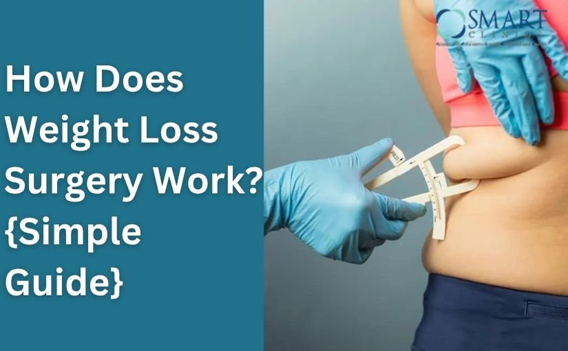

The Impact of Obesity on Women's Health and How Gastric Bypass Surgery Can Help
In recent years obesity among Indian women has increased exponentially. According to the National Family Health Survey, obesity rates double every 10 years in India. Over 16% of women in the country and up to 50% of women in Delhi are overweight or obese. With this growing menace more and more women who conceive also happen to be obese.
A multitude of problems is associated with obesity in women particularly those who are in the reproductive age group. Apart from physical problems, others range from difficult intercourse, symptomatic fibroids, dysfunctional uterine bleeding, PCOD, anovulatory cycles, urinary stress incontinence, and infertility. Again birth defects, difficult labor, increased risk of caesarian section delivery, and cancers like ovarian cancer, endometrial cancer, cervical cancer, and breast cancer, are all associated with obesity. There is a very high risk of gestational diabetes mellitus as well as pregnancy-induced hypertension in ladies who are obese.
There are additional risks to babies born to such mothers, such as developmental anomalies, intrauterine deaths, and preterm deliveries. These babies have an increased lifetime risk of developing diabetes and high blood pressure.
Bariatric surgery or Gastric Bypass Surgery has emerged as the most effective treatment option for obesity over the last few decades. Women account for about 83% of bariatric procedures among reproductive age. Laparoscopic sleeve gastrectomy has been the most commonly performed weight loss treatment among women of reproductive age.
In addition to sustained weight loss, there is also resolution or improvement in obesity-related diseases after gastric bypass surgery. Diabetes mellitus, hypertension, OSA, fatty liver disease, and joint pains are just a few among them. There is also improvement in fertility, menstrual cycles, and ovulation so much so that infertile obese ladies have conceived normally after weight loss treatment. They give birth to babies with a lower risk of cardiovascular complications or birth defects.
After gastric bypass surgery, pregnancy is better avoided for a minimum of 12 months. As by that time the mother has resumed her normal diet, and she has been allowed to achieve full weight loss. Most importantly, the baby is not exposed to maternal rapid weight loss environment or maternal malnutrition.
Seeking for gastric bypass surgery in Delhi? Consult us at Smart Cliniqs to get answers to your queries from the top bariatric surgeon in Delhi.
Back to Blog